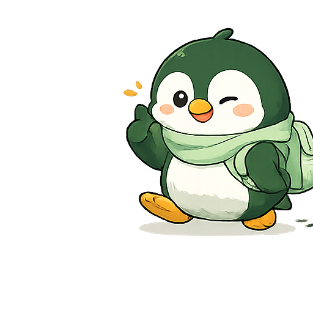
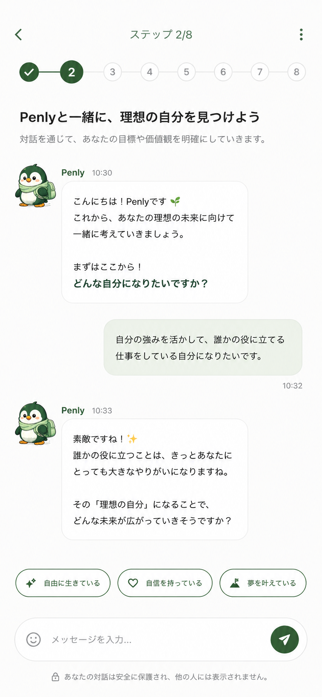
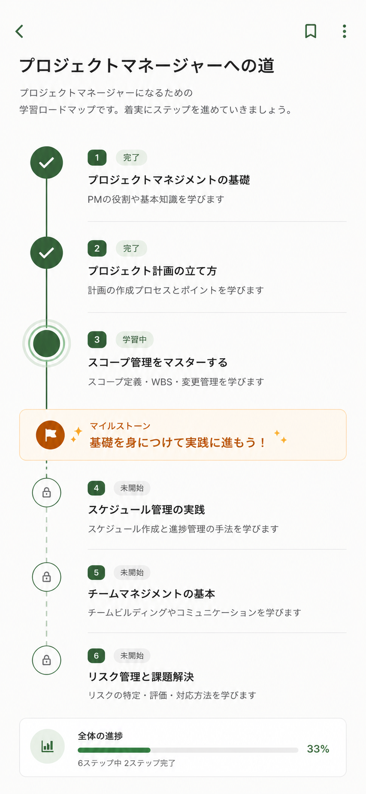

やりたいことは
ある。
何から始めればいいか、わからない。
その一歩を、一緒に踏み出す。
あなたのビジョンは、
形にできる。
本日お伝えすること
製品思想と
課題
なぜNavilyを作るのか。コーチ未満市場の構造的空白。
Navilyの
アプローチ
4つのAIロールと伴走の設計思想。
体験と
使い方
3ステップで始める学習体験の全体像。
プランと
次のステップ
料金体系とフィードバックの方法。

"We believe in your vision.
We believe it can take shape."
あなたのビジョンを信じている。
それは、形にできる。
Mission
ポテンシャルが価値に変換される社会をつくる。
プロダクト約束: 学びたいものを、学びたい順で、なりたい自分に最短距離で近づける。
The Problem
コーチが必要だが手が届かない。
学びたいのに続かない。この構造的な断絶。
こんな経験、ないですか
学びは、なぜ続かないのか
MOOC completion rate
オンライン講座を最後まで完走する人の割合。
97%が途中で止まっている。
出典: Ho et al. (2015) "HarvardX and MITx" — edX 68コース・841,687人の完走率分析
計算: Certificate取得者数 / 登録者数。自己ペース型は5.5%、講師ペース型は2.6%
3–6%
Want coaching, can't afford
成人の53%がコーチを求め、
実際に利用できるのは12%だけ。
出典: ICF Global Coaching Study 2023 — 30カ国・16,000人の消費者調査
計算: 「コーチングに関心あり」53% - 「実際に利用」12% = 41%がアクセスできていない
41%
コーチングは効く。ただ、届いていない。
Coaching ROI
コーチングを導入した企業の投資対効果は14倍。離職率50%低下、昇進率1.2-1.8倍、営業目標達成率1.6倍。
出典: BetterUp (2023) "The ROI of Coaching" — Fortune 500企業750社・300万人のデータ分析
計算: コーチング投資額に対する、生産性向上+離職コスト削減+昇進後パフォーマンスの総合ROI
14x
日本のコーチング浸透度
ICF認定コーチは日本にわずか1,100人（米国は40,000人超）。人口比で36分の1。
「コーチング」を正しく説明できる日本人は少ない。文化的に「人に弱みを見せたくない」が壁になっている。
出典: ICF Global Coaching Study 2024 — 認定コーチ数の国別統計
計算: 日本1,100人 / 人口1.25億 vs 米国40,000人 / 人口3.3億 → 人口10万人あたり日本0.88人 vs 米国12.1人
1,100人
Our Approach
対話でビジョンを明確にして、あなた専用の道筋と教材を作り、
毎日隣で歩く。
4つの役割が「伴走」に統合される
ありたい姿を
一緒に見つける
対話でゴール・現在地を明確にする。ぼんやりした不安に輪郭を与える。
競合: キャリアコーチアプリ（個別）
ゴールから
道筋を引く
パーソナライズされた学習ロードマップを自動生成。最大15コース。
競合: なし（既存はカリキュラム固定）
一緒に学ぶ
教材を用意する
テキスト+音声の教材をリアルタイム生成。あなたの文脈に合った内容。
競合: ChatGPT（汎用すぎる）
毎日、
隣にいる
チェックイン、振り返り、進捗可視化。やめても「おかえりなさい」。
競合: Duolingo（ゲーミフィケーション型）
個別には競合があるけど、この4つを一貫体験として提供するプロダクトは存在しない。
ゴールを一緒に
見つける
「なんとなく変わりたい」を、10ターンの対話で具体的なゴールに変える。
Type A: ゴールが未確定
「何を目指したいか」から一緒に探る。キャリアの棚卸し、価値観の整理を対話で。
Type B: スキルパスが不明
「PMになりたい」はある。でも何から手をつけるか見えない。その道筋を一緒に描く。
10ターンの深掘り
表面的な質問で終わらない。現在地とゴールの差分を、対話の中で明確にしていく。
ゴールから逆算した
道筋を引く
「あなたのゴール」から逆算して、必要なスキルを分解し、最適な順番で並べる。
逆算型ロードマップ
最大15コースを自動生成。「なぜこの順番なのか」も説明するので、納得して進められる。
段階的アンロック
全部見えると圧倒される。今やるべきことだけが見える設計。マイルストーンで達成を可視化。
対話でいつでも調整
「やっぱり別の方向に行きたい」も対話で対応。ロードマップは生き物。固定されたカリキュラムとは根本的に違う。
あなた専用の
教材を用意する
テキスト+音声の教材をリアルタイム生成。あなたの履歴と文脈を踏まえた、その場限りの教材。
Reactフックを使いこなす
Generated for you · 5 min read
なぜフックが必要か
クラスコンポーネントの`this`バインドは、初学者にとって最大の壁でした。フックは関数のままで状態を扱えるようにします。
useState の基本
あなたが先週学んだ「DOM操作」を思い出してください。あの時の手動更新を、Reactは差分計算で自動化します
リアルタイム教材生成
ストリーミング配信でTTFS 5-7秒。待たされる感覚なく、すぐ学び始められる。
音声解説（Gemini TTS/STT）
テキストだけでなく音声でも学べる。通勤中・家事中でもインプット可能。音声対話にも対応。
文脈が残るAIチャット
教材を読んで疑問があればその場でAIに質問。先週の学習内容も覚えている。汎用AIとの決定的な違い。
毎日、隣にいる
「卒業」ではなく「進化」を設計している。離れても、戻ってきても。
ゴール変更時
「方向が変わったんですね。新しいゴールを一緒に考えましょう」— 否定しない、一緒に考える。
離脱後の復帰
罪悪感なし。「おかえりなさい」から始まる。3日でも3ヶ月でも。ストリーク保護で連続記録も守れる。
日々のサイクル
月曜: 今週のアクション提案。金曜: 振り返りと次週の種まき。週末は休んでOK。あなたのペースで。
こんな人に使ってほしい
動けない人
変わりたい気持ちはあるが、何から手をつければいいか分からず止まっている。
続かない人
独学を始めても3日〜1週間で止まる。意志ではなく仕組みが足りない。
相談相手がいない人
迷いを率直に話せる相手がいない。コーチは高くて手が届かない。
The Experience
3ステップで、変わり始める。
3ステップで始める
話すだけで
ゴールが見えてくる
AIコーチとの対話で、ぼんやりした「こうなりたい」が明確なゴールに変わる。

あなた専用の
道筋ができる
ゴールから逆算したロードマップを自動生成。何を、どの順で、どのくらい。

今日やることが
もう決まっている
毎週のアクションが明確。教材も、チェックインも、伴走もここから。

話すだけで
ゴールが見えてくる
ペンリー（AIコーチ）との対話で、あなたのゴールと現在地を一緒に整理します。
- ●10ターンの深掘り対話
- ●Type A（ゴール未確定）/ Type B（スキルパス不明）を自動判定
- ●表面的な「何がしたい？」で終わらない
あなた専用の道筋ができる
ゴール設定
Step 1の対話結果
コース生成
最大15コース
マイルストーン
段階的アンロック
調整・分岐
対話でいつでも
逆算型
ゴールから必要なスキルを分解。「なぜこの順番なのか」も説明する。
段階的アンロック
全部見えてると圧倒される。今やるべきことだけが見える設計。
柔軟な変更
「やっぱり別の方向に行きたい」も対話で対応。ロードマップは生き物。
今日やることが、もう決まっている
学ぶ時間に変わる。
3つの楽しみ方
体系的に学ぶ
AIとの対話でロードマップを作り、ゴールから逆算して体系的に学ぶ。自分だけのカリキュラム。
Roadmap Modeピンポイントで学ぶ
単発テーマで教材を生成。必要なことだけ、すぐ学ぶ。忙しい日はこれだけでもOK。
Quick Mode学びを見える化する
スキルツリーで知識のつながりを俯瞰。学習記録を残して、成長を実感する。
Skill Tree主な機能
ヒアリング（v5）
AIとの対話でゴール・現在地を明確にする。10ターン深掘り+AIチップ14カテゴリ。
ロードマップ生成
ゴールから逆算した学習計画を自動生成。最大15コース、段階的アンロック。
AI教材生成
テキスト教材をリアルタイム生成。ストリーミング配信でTTFS 5-7秒。
音声解説
Gemini TTS+STT音声対話。通勤中でも学べる。
スキルツリー
6色+4状態で知識のつながりを俯瞰。
AIチャット
ペンリーとの自由対話。学習の悩み、何でもOK。
週次レポート
学習成果と来週のアクションを自動生成。
ストリーク
連続学習日数を記録。保護機能あり。
チェックイン
学習報告 → AIフィードバック。伴走の核。
機能は手段。 伴走が本質。
4つのタブ構成
ホーム
- 今週のアクション（3つまで）
- Today's Focus
- 進捗サマリー
- ストリーク記録
- 学習チェックイン
毎日開くメイン画面。今やるべきことがすぐ分かる。
ロードマップ
- パス型の学習計画
- コース一覧 + 段階的アンロック
- マイルストーン進捗
- 完了コースの振り返り
- RM延長・方向転換
ゴールまでの全体像を俯瞰。今どこにいるか一目で分かる。
ペンリー
- AIコーチとの自由対話
- 学習相談・キャリア相談
- 音声対話（TTS/STT）
- 教材の疑問をその場で解決
- ゴール調整の相談
困ったこと、迷ったこと、何でもペンリーに話しかける。
マイページ
- プロフィール設定
- スキルツリー（6色+4状態）
- 学習統計・ストリーク
- プラン管理
- フィードバック送信
自分の成長を記録し、スキルのつながりを俯瞰する。
ユーザーフロー
ログイン
を整理
自動抽出
自動生成
が決まる
+音声
イン
フィードバック
「思いついた今日」から動き出せる。
登録は Google アカウントで10秒。
ロードマップが自動で組み上がる。
AIが今週やるべき3つを提案。週の最初に方向が決まる。
教材で学ぶ → チェックインで報告 → ペンリーがフィードバック。毎日数分でいい。
今週の成果と気づきを言語化。来週の種まきになる。
ストリーク保護で連続記録は守られる。罪悪感ゼロで休む。
離脱しても、いつでも「おかえりなさい」。
提案アクション数
学習時間の幅
再開できる
使い方のコツ
ペンリーに話しかける
学習の悩み、キャリアの方向性、今日やる気が出ない — 何でもOK。雑談からゴール調整まで。正直に話すほど精度が上がる。
Chat anytime週1のアクション報告
「今週これやりました」を報告するだけで、AIが学習プランを最適化する。短くてもいい。やった事実が大事。
Weekly check-in5分モード & じっくりモード
忙しい日は教材の要約だけ5分で。余裕がある日はフルチャプターでじっくり。自分のペースで。
Your pacePlans & Next
まず無料で、あなたのペースで始められます。
プラン
- AIチャット 3回/日
- AIチューター 10回/月
- 教材の要約のみ
- ストリーク記録
カード不要ですぐ始められる
- AIチャット 100回/月
- AIチューター 無制限
- 全チャプター閲覧
- ストリーク保護 無制限
- 音声対話（TTS/STT）
- 高精度AIモデル
- 週次レポート
全機能を使い倒すならこのプラン
- AIチャット 50回/月
- AIチューター 30回/月
- 全チャプター閲覧
- ストリーク保護 月1回
まず有料の価値を試したい方に
始め方
困ったときは
ゴールが変わったら？
ペンリーに相談してください。ロードマップはいつでも調整できます。方向転換は失敗じゃなくて進化です。新しいゴールに合わせて、コースも自動で再構成されます。
続かなくなったら？
罪悪感なし。いつでも戻れます。「おかえりなさい」から再開。ストリークは保護機能で守れます。3日でも3ヶ月でも、戻ってきたところから続けられる設計です。
プランを変えたい？
マイページからいつでもアップグレード/ダウングレードできます。日割り計算で無駄なし。年額は38%OFF。いつでも変更・解約できます。
バグや要望があったら？
ペンリーとの対話中にそのまま伝えてください。「ここ使いにくい」も「こういう機能ほしい」も直接届きます。フィードバックフォームからも送れます。
フィードバックの送り方
画面右下のアイコンをクリック
フィードバックフォームが開きます。不具合報告、機能改善の提案、使いにくかった点 — 何でも送れます。
バーガーメニュー（≡）から
メニューを開くと「フィードバック」タブがあります。スマホからでも同じように送信できます。
ネガティブなフィードバックが一番ありがたい
「ここが使いにくい」「意味がわからなかった」「期待と違った」— そういう声が、Navilyを本当に良くします。遠慮なく送ってください。
Navily — ゴールを見つけて、毎日伴走するAIコーチ
解く課題
オンライン講座の完走率はわずか3-6%。41%がコーチを求めるが月3万円は払えない。「学びたいのに続かない」構造的な問題。
Ho et al. (2015) / ICF 2023
AIロール
Coach(ゴール発見) → Architect(道筋設計) → Tutor(教材生成) → Companion(毎日伴走)。この4つの統合が差別化。個別には競合があるが、一貫体験として提供するサービスは存在しない。
唯一の統合AI伴走型
初回体験
登録10秒 → 対話5分 → RM自動生成 → 今日のアクション。登録から最初の学びまで約10分。カード不要、無料で始められる。
Google認証 → 即開始
プラン
Free(¥0) / Lite(¥980/月) / Premium(¥1,980/月)。年額は38%OFF。まず無料で試して、価値を感じたらアップグレード。
Your vision can take shape.
あなたのビジョンは、
形にできる。

クレジットカード不要 · AIチャット 3回/日 無料